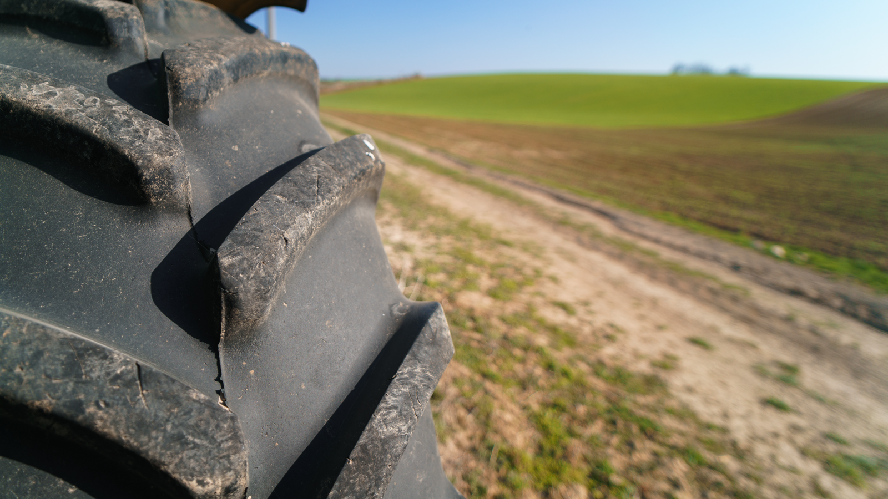

Home / Blog / Agricultural Tire Retreading
INDUSTRY TRENDSFarmers are holding on to equipment longer and spending more on tires to keep it running. That's put a real question back on the table: does retreading work for ag tires the way it does for commercial trucking? The honest answer is "it depends which tire."
Published September 15, 2026 · Good Hope Retreaders

Farm equipment budgets are tight going into the back half of 2026. A survey cited by Tire Review, drawing on National Corn Growers Association data, found 58% of farmers may postpone equipment purchases this year, 38% may cut back on fertilizer, and 22% are looking at off-farm income to bridge the gap. The direct effect on tires: farmers are holding on to tractors and implements longer instead of trading them in, which means more of them are researching tire replacement — including whether retreading applies to farm equipment the way it applies to their trucking neighbors.
It's a fair question, and the honest answer isn't a clean yes or no — it depends heavily on which tire on the farm you're talking about. This post lays out where ag tire retreading is a real, established practice, where it's genuinely uncommon, and why.
Start with what most people picture when they hear "farm tire retreading" — the huge R-1 lugged drive tires on a row-crop tractor. Look for a dedicated tractor-drive-tire retread program from any of the major commercial retread systems and you'll come up mostly empty. Bandag, Continental, and Michelin's retread technologies are built and marketed for commercial truck & bus tires — none of them run a comparable branded program for large production tractor drive tires. That's a real gap, not an oversight on our part in researching this piece.
A few structural reasons explain why. First, construction: Modern Tire Dealer's coverage of the farm tire market notes bias-ply construction has gradually given way to radial, which is now the most widely adopted build in agriculture — and radial demand specifically for equipment above 100 hp has been climbing. That matters for retreadability: as Mitas Tires' explainer on casing performance and Yokohama OHT's radial-vs-bias comparison both describe, a radial casing holds its shape and rolling geometry more consistently through its working life than a bias casing does — the same reason radials are the better retread candidate in commercial trucking and OTR. A lot of the ag tire population still in the field is older bias-ply stock, which is a tougher retread proposition to begin with.
Second, economics of scale. A deep lugged ag tread can't be applied from an off-the-shelf precure strip the way a commercial truck tread can — it needs a mold or a hand-sculpted build closer to the mold-cure and autoclave processes we cover in our OTR retreading guide. Tooling a mold for a specific tread pattern and size only pays for itself at real volume, and OEM ag tread designs are frequently pattern- and brand-specific — a very different economic picture from a commercial truck retread line running the same handful of casing sizes across thousands of trucks.
Two segments of the ag tire world have working retread supply chains today:
Modern Tire Dealer's reporting frames the current farm economy plainly: as crop prices settle well below their 2022 peak and input costs — fuel, fertilizer, seed, interest — stay elevated, farmers are choosing to replace tires rather than machinery. That's driving replacement demand, and a growing share of that replacement demand is radial, which is itself a tailwind for future retreadability even where retreading isn't the choice today.
On the market-size side, the agricultural tire market is projected at roughly $9.17 billion in 2026, growing at a 5.70% compound annual rate toward $12.78 billion by 2032, per Research and Markets' agricultural tires forecast. Separately, trade coverage of the broader ag tire market notes that in mature markets like North America and Europe, retreading is increasingly positioned as one lever — alongside precision agriculture and durability improvements — for optimizing total cost of ownership on equipment fleets, not a fringe practice.
Put together: the pressure pushing farmers toward tire replacement over equipment replacement is real and current, but it mostly shows up as new-tire and radial-conversion demand today. Retreading rides alongside that trend most cleanly in the segments — LT-cased utility tires, OTR-scale equipment — where a working retread supply chain already exists.
| Tire type | Retread availability | Why |
|---|---|---|
| Large row-crop tractor drive tires | Rare — no major branded program found | Mold/tooling cost, low volume per pattern, mixed bias/radial population |
| LT-cased utility/implement/trailer tires | Real, established (e.g. Tire Recappers) | Same steel-belted LT casings as commercial retreading uses |
| Large self-propelled ag/OTR-scale equipment | Real, specialized | Served by the same OTR mold-cure/autoclave retread field |
We'll say this plainly: our equipment line is built for commercial truck & bus precure retreading, the same line covered throughout this blog. We don't sell the mold-cure or autoclave equipment that large-format ag and OTR retreading runs on. Where our equipment does apply is the LT-cased utility and implement tire segment — the inspection, buffing, and precure curing equipment behind that work is the same equipment behind any commercial LT/truck retread line. If that's the part of your operation you're evaluating, we can help spec it.
For the giant-format side of ag and OTR equipment, our OTR retreading guide explains who actually does that work and what it takes. And for the core commercial retread economics this post builds on, see retreads vs. new tires: the cost-per-mile numbers.
We supply the inspection, buffing, and electric curing equipment behind a commercial precure retread line — with transparent all-in Canadian pricing and delivery from our Ontario warehouse, manufacturer-direct. Tell us what you're running and we'll help you spec it.
Get an equipment quote →Send us your requirements and we'll get back to you within 24 hours with pricing and lead times — no obligation.